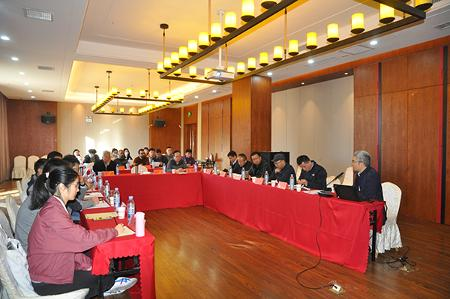
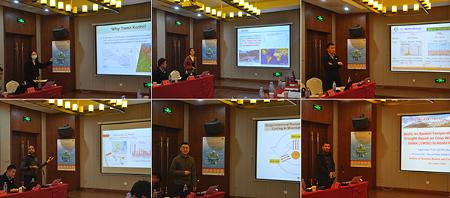
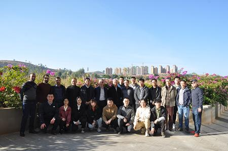

12月10日至13日，中国科学院加德满都科教中心山地可持续发展分中心（以下简称“分中心”）2020年度工作会议暨学术交流会议在成都山地所元谋干热河谷沟蚀崩塌观测研究站顺利召开。中科院国际合作局董麒研究员，云南大学何大明教授、刘时银教授，云南省农科院热区生态农业研究所党委书记方海东研究员、副所长史亮涛研究员等应邀出席。分中心主要成员与研究生共30余人参加了此次会议。
会议梳理总结了分中心2020年主要工作，传达了2020年中科院海外中心理事会精神，重点研讨了分中心2021年工作安排和中长期发展目标。2020年，分中心克服新冠疫情影响，在平台建设、科学考察、项目争取、伙伴拓展和人员培训等方面全面完成了既定目标。2021年，将继续开展中尼通道建设和区域发展、柯西河跨境流域的灾害防治和跨境水土资源管理等方面的科研工作，同时加强野外观测场地建设、专业技术培训和留学生招收等工作。会议指出，分中心的中长期发展要更加关注区域可持续发展，立足尼泊尔、面向南亚开展资源环境方面的研究工作，积极拓展合作伙伴，打造合作平台，支撑区域共性问题应对和“一带一路”建设。
会议学术交流期间，7名青年学者和研究生分别围绕尼泊尔冰川冰湖发展形势、冰湖溃决、土壤侵蚀、区域干旱影响、土壤养分循环、2020年尼泊尔气候特征等进行了深入交流和讨论。
与会代表还实地考察了元谋站生活区和野外实验观测平台，参观了元谋小丙岭农业科技示范园。
2020年12月11日是第十八届“国际山地日”，本年度“国际山地日”的主题是“山地生物多样性至关重要（Mountain Biodiversity
Matters）”。分中心以年度工作和学术交流会的形式，开展“国际山地日”系列活动，不仅有助于引导更多研究学者关注世界山地问题，也有利于吸引更多人关注山区的资源环境保护与可持续发展，促使国际社会更加重视保护山区生态系统和促进山区居民福祉。

会议现场

青年学术交流

与会代表合影